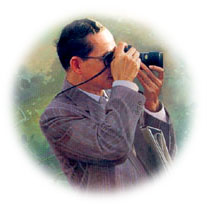

|
๓๖
แผนที่ชีวิต
พระบรมราโชวาทพระบาทสมเด็จพระเจ้าอยู่หัว |
|
 ๑. ขอบคุณข้าวทุกเม็ด น้ำทุกหยด อาหารทุกจานอย่างจริงใจ ๒. อย่าสวดมนต์เพื่อขอสิ่งใด นอกจาก "ปัญญา" และ "ความกล้าหาญ" ๓."เพื่อนใหม่" คือของขวัญที่ให้กับตัวเอง ส่วน "เพื่อนเก่า"/ "มิตร" คืออัญมณีที่นับวันจะเพิ่มคุณค่า ๔. อ่านหนังสือ ธรรมะ ปีละเล่ม ๕. ปฏิบัติต่อคนอื่นเช่นเดียวกับที่ต้องการให้ผู้อื่นปฏิบัติต่อเรา ๖. พูดคำว่า "ขอบคุณ" ให้มากๆ ๗. รักษา "ความลับ" ให้เป็น ๘. ประเมินคุณค่าของการให้ "อภัย" ให้สูง ๙. ฟังให้มากแล้วจะได้คู่สนทนาที่ดี ๑๐.ยอมรับความผิดพลาดของตัวเอง หากมีใครตำหนิและรู้แก่ใจว่าเป็นจริง ๑๑. หากล้มลง จงอย่ากลัวกับการลุกขึ้นใหม่ ๑๒. เมื่อเผชิญหน้ากับงานหนักคิดเสมอว่า เป็นไปไม่ได้ที่จะล้มเหลว ๑๓. อย่าถกเถียงธุรกิจภายในลิฟต์ ๑๔. ใช้บัตรเครดิตเพื่อความสะดวก อย่าใช้เพื่อก่อหนี้สิน ๑๕. อย่าหยิ่งหากจะกลว่าวว่า "ขอโทษ" ๑๖. อย่าอายหากจะบอกใครว่า "ไม่รู้" ๑๗. ระยะทางนับพันกิโลเมตร แน่นอนมันไม่ราบรื่นตลอดทาง ๑๘. เมื่อไม่มีใครเกิดมาแล้ววิ่งได้ จึงควรทำสิ่งต่างๆ อย่างค่อยเป็นค่อยไป ๑๙. การประหยัดเป็นบ่อเกิดแห่งความร่ำรวยเป็นต้นทางแห่งความไม่ประมาท ๒๐. คนไม่รักเงิน คือคนไม่รักชีวิต ไม่รักอนาคต ๒๑. ยามทะเลาะกัน ผู้ที่เงียบก่อนคือผู้ที่มีการอบรมสั่งสอนที่ดี ๒๒.ชีวิตนี้ฉันไม่เคยได้ทำงานเลยสักวัน ทุกวันเป็นวันสนุกหมด ๒๓.จงใช้จุดแข็ง อย่าเอาชนะจุดอ่อน ๒๔. เป็นหน้าที่ของเราที่จะพูดให้คนอื่นเข้าใจไม่ใช่หน้าที่ของคนอื่นที่จะทำความเข้าใจใน สิ่งที่เราพูด ๒๕. เหรียญเดียวมี 2 หน้า ความสำเร็จ กับ ล้มเหลว ๒๖. อย่าตามใจตัวเอง เรื่องยุ่งๆ เกิดขึ้นล้วนตามใจตัวเองทั้งสิ้น ๒๗. ฟันร่วงเพราะมันแข็ง ส่วนลิ้นยังอยู่เพราะมันอ่อน ๒๘. อย่าดึงต้นกล้าให้โตไวๆ (อย่าใจร้อน) ๒๙. ระลึกถึงความตายวันละ 3 ครั้ง ชีวิตจะมีสุข มีอภัย มีให้ ๓๐. ถ้าติดกระดุมเม็ดแรกผิด กระดุมเม็ดต่อๆไปก็ผิดหมด ๓๑. ทุกชิ้นงานจะต้องกำหนดวันเวลาแล้วเสร็จ ๓๒. จงเป็นน้ำครึ่งแก้วตลอดชีวิต เพื่อเรียนรู้เพิ่มเติมได้ตลอด ๓๓. ดาวและเดือนที่อยู่สูงอยากได้ต้องปีน "บันไดสูง" ๒๔. มนุษย์ทุกคนมีชิ้นงานมากมายในชีวิตจงทำชิ้นงานที่สำคัญที่สุดก่อนเสมอ ๓๕. หนังสือเป็นศูนย์รวมปัญญาของโลก จงอ่านหนังสือเดือนละเล่ม ๓๖. ระเบียบวินัย คือ คุณสมบัติที่สำคัญในการดำเนินชีวิต
วัดท่าไทร |